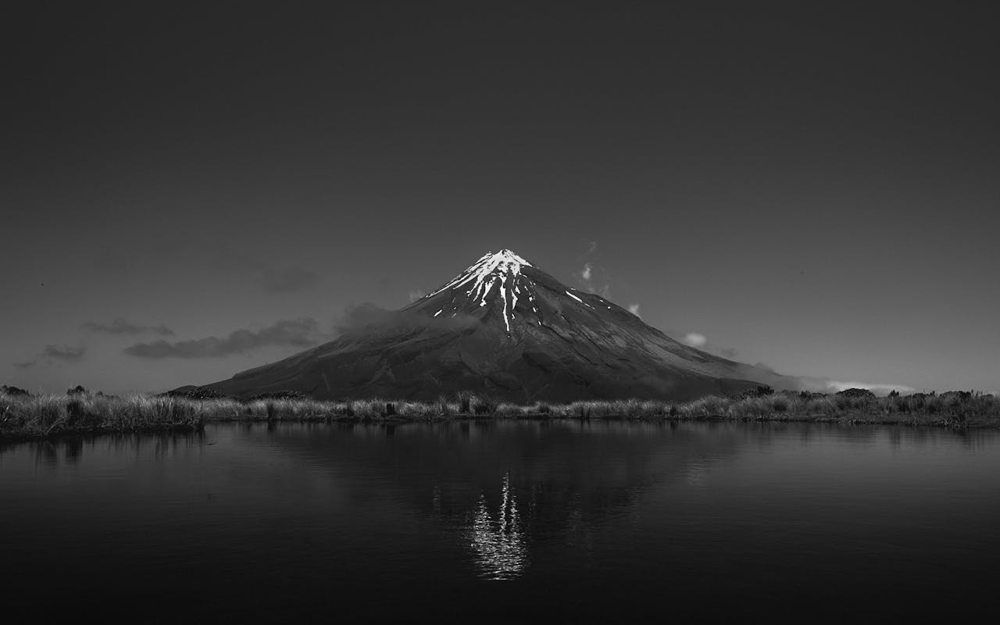

Overview
Africa's second-highest mountain and a UNESCO World Heritage Site. Mount Kenya is an extinct volcano featuring dramatic peaks, receding glaciers, and diverse ecological zones from bamboo forests to alpine moorland. Whether you're seeking a challenging technical climb to Point Lenana or a gentle forest walk with wildlife viewing, Mount Kenya delivers an unforgettable high-altitude experience.
Wildlife Highlights
Mountain Climbing (5,199m)
Summit Point Lenana at 4,985m or attempt the technical peaks of Batian and Nelion.
Montane Forests
Dense bamboo and tropical highland forests teeming with wildlife and endemic species.
Glaciers & Peaks
Dramatic glacial valleys and the remaining tropical glaciers near the equator.
Bird Watching (200+ Species)
Over 200 bird species including sunbirds, eagles, and the rare Abbott's starling.
5-Day Itinerary
Day 1 — Nairobi to Old Moses Camp (3,300m)
- Early morning pickup from Nairobi
- Transfer to Sirimon Gate (2,650m)
- Trek through montane forest zone
- Arrive at Old Moses Camp (3,300m)
- Evening briefing and acclimatization
Day 2 — Shipton's Camp (4,200m)
- Cross the moorland zone with giant groundsels
- Lunch at Liki North River crossing
- Ascend through Mackinder's Valley
- Arrive at Shipton's Camp (4,200m)
Day 3 — Austrian Hut (4,790m)
- Acclimatization day with altitude training
- Short hike to Hausberg Col for views
- Afternoon transfer to Austrian Hut (4,790m)
- Early dinner and rest before summit push
Day 4 — Summit Point Lenana (4,985m)
- 3:00 AM wake-up and light breakfast
- Pre-dawn summit attempt via scree slopes
- Sunrise at Point Lenana (4,985m)
- Descend to Shipton's Camp for lunch
- Continue to Old Moses Camp
Day 5 — Descent to Nairobi
- Final descent through the forest zone
- Arrive at Sirimon Gate by midday
- Certificate presentation and celebration
- Transfer back to Nairobi